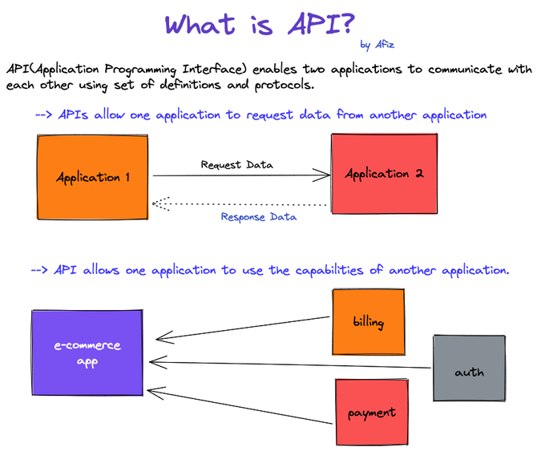
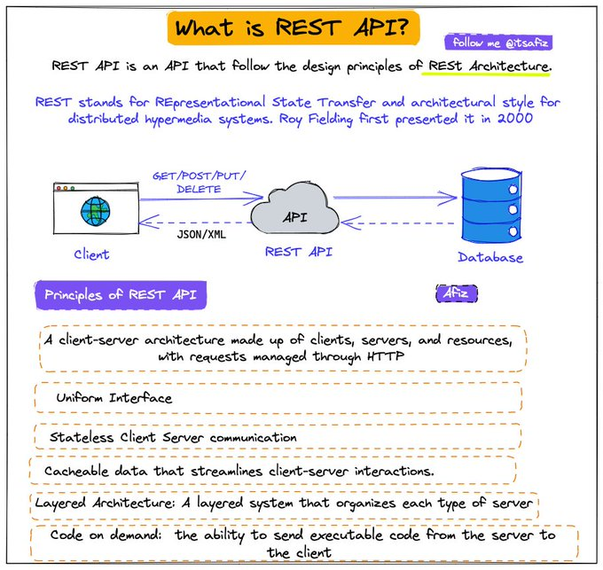
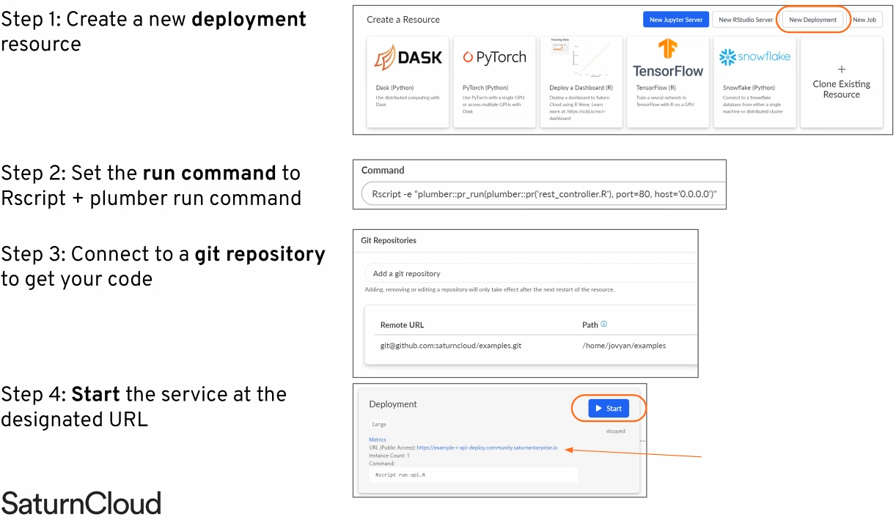

Build
Misc
- Definition
 - REST API
 - Packages
- {beekeeper} - Used to create and maintain R packages that wrap APIs.
- {nanonext} - R binding for NNG (Nanomsg Next Gen), a successor to ZeroMQ. NNG is a socket library for reliable, high-performance messaging over in-process, IPC, TCP, WebSocket and secure TLS transports. Implements ‘Scalability Protocols’, a standard for common communications patterns including publish/subscribe, request/reply and service discovery.
- A powerful alternative to {httr2} for testing scenarios involving multiple simultaneous requests
- {plumber2} - Complete rewrite of {plumber} and incompatible with the original
- {vcr} - Records and replays HTTP requests so you can test your API package
- Works with {crul}, {httr} and {httr2}
- Design questions
- Should the API receive the entire datapoint (e.g sensitve customer info) or just an ID for you to query in a database itself?
- Where should the model be loaded from? Disk? Cloud? (see Production, Deployment >> Model Deployment Strategies)
- What diagnostic output should be returned along with result?
- Use CI/CD to unit test, rebuild, and deploy the API every time there’s a push a commit to the production branch of your repo.
- Best Practices Thread
- Versioning
- IDs vs UUIDs
- Nested resources
- JSON API
- Let the client decide what it wants
- Comparisons
- TechEmpower benchmarks
- Python’s FastAPI vs GO (source)
- Go (net/http)
- Processes 29% more requests over the same period
- The median response rate is 27% lower than FastAPI
- The 98th percentile is 640 ms, which is significantly better than Python.
- Ideal for high-load projects: social networks, marketplaces, streaming services
- Uses server resources more efficiently and ensures stability under increasing load
- Python (FastAPI + Uvicorn)
- Fast development and ease of API creation
- Suitable for small and medium projects
- Load up to ~1000 RPS (~1000 online users)
- Asynchronous processing allows for moderate loads to be handled without critical delays.
- An excellent choice if speed to market and ease of support are more important.
- Go (net/http)
{kind=link}
{kind=link}
Terms
- Async/Await - Unlike threading where the OS has control, with this method, we can decide which part of the code can be awaited and thus control can be switched to run other parts of the code. The tasks need to cooperate and announce when the control will be switched out. And all this is done in a single thread with the
awaitcommand. (article) - Threading - Uses multiple threads and takes turns to run the code. It achieves concurrency with pre-emptive multitasking which means we cannot determine when to run which code in which thread. It’s the operating system that determines which code should be run in which thread. The control can be switched at any point between threads by the operating system. This is why we often see random results with threading (article)
Strategies
- Alternatives to a standard syncronous API are needed for situations where there are high volumes of requests or endpoints with long running tasks.
- e.g. Training machine learning models or performing batch ETL jobs
- Notes from
- Asynchronous Programming (Async)
- See article repo for code
- Executes multiple computations/requests without waiting for each one to finish
- Single threaded programming languages like R and Python handle this by starting background R/Python processes in addition to the main one.
- Async typically benefits apps with a lot of I/O-bound tasks rather than CPU-bound tasks
- IO-bound Tasks
- The bottleneck is waiting for IO responses
- Includes fetching data from other APIs, webpages, or databases
- N CPUs should mean N x as many requests that can be handled.
- CPU-bound Tasks
- Include in-memory data processing, training machine learning models, or other complex mathematical calculations.
- Example: A server with 4 cores and training an ML model is using all of them
- Spawning more background R sessions isn’t going to do much, since all of the cores are busy.
- The new R sessions created by async would just idle waiting for one of them to become available
- IO-bound Tasks
- What about mixed cases where an endpoint is a task that is both IO-bound and CPU-bound?
- e.g. fetching data and then training a model on that data
- Probably, but with mixed cases it’s best to use load tests to verify whether using async programming is beneficial.
- Debugging is harder due to the added complexity
- More RAM is used automatically.
- If 0.5 GB of RAM is required for a session and the async API uses 8 CPUs, then 4 GB of RAM is taken before any requests are taken.
- The API may hit an OOM error later due to the additional memory used to process all the incoming requests if these considerations aren’t taken into account.
- Disk spillover may also occur which will slow things down.
- Checklist (If 2 out of 3, then try async)
- Does the endpoint receive a lot of traffic compared to others?
- Is the endpoint primarily I/O-bound?
- Does it take a long time to execute (e.g. 100-500ms or more)?
- Polling Pattern
- See article repo for code
- AKA async request-reply pattern
- Take your endpoint and turn it into four: one to accept the job, one to check status, one to retrieve results, and one to cancel.
- Issues
- Adds some latency to your long-running tasks.
- Example: If the client can only poll every 5 seconds but your task finishes in 6 seconds, then the task takes a total of 10 seconds roundtrip because the client has to wait an additional 4 seconds to retrieve the result.
- Solution: Understand the typical execution times of your long-running tasks and set the polling interval accordingly.
- The status endpoint introduces additional computational overhead on your API.
- Clients want the results of their tasks as soon as possible, and if you don’t tell them otherwise, they will poll for status updates aggressively. Recall that R is single threaded, and that little things add up.
- Recall that R is single threaded, and that little things add up. An endpoint that completes in 1 millisecond is fast, but hit it with a 1000 requests and now that fast endpoint is taking a whole second to process them all.
- Solution: Research batching client updates
- Adds some latency to your long-running tasks.
- Use Cases
- Firewall restrictions prevent inbound connections. A lot of mobile or private apps only allow outbound traffic to external services. In cases like this, webhooks wouldn’t work, but polling does.
- You don’t own the client or can’t easily make changes to it. The added complexity webhooks introduce, including backend changes and authentication, may make them a no-go for the client we’re integrating with. In these cases, polling is simpler to implement for any client.
- Updates occur at a high frequency. If our tasks get large amounts of updates, instead of ruthlessly pinging our app for updates, the client can submit requests in batches, thereby controlling the toll polling places on our app.
- Webhooks
- See article repo for code
- An event-driven strategy for communicating with other web services.
- When the client requests some work to be done, it also provides a URL for the server to post the task result to when the task is complete.
- Two Endpoints: Submit Task and Cancel Task
- Eliminates Polling Pattern Issues of extra overhead and latency
- The client no longer polls for updates about the task because the server is now in charge of delivering the finished result to the client. Therefore, no more added latency as in Polling Pattern
- Issues
- The client needs to implement a new endpoint that our application can send results to.
- If the client is a browser, for example, then this can’t be done. Since the server is now POST-ing data to the client, the client also needs to think about authentication so that it doesn’t leave itself vulnerable to malicious actors.
- Suppose an error occurs during the lifecycle of the webhook request. Our implementation doesn’t include it, but in production, the webhook functionality will usually have logic for handling retries. Even if, after retries, the request still fails, the client has no way of recovering the results of the completed task; in such circumstances, the client has no choice but to issue a new request, thereby creating wasted effort for our application.
- The client needs to implement a new endpoint that our application can send results to.
- Use Cases
- The client is also a server. Think backend-to-backend communication, like one Plumber API talking to another instead of a Plumber API talking to a Shiny app. These are the sorts of clients that can support webhooks.
- The client needs real-time notifications. Remember how polling adds latency to tasks? This can be a showstopper for applications that need real-time updates. The event-driven nature of webhooks are more suitable for these kinds of applications.
- Task execution times have high variability. If your task execution times are all over the place, it can make implementing the polling pattern awkward. Setting the
Retry-Afterheader to a single value can create unnecessary friction inside of your app because tasks that finish faster have to have the same polling interval as tasks that are slower. - High volume of concurrent requests. If we have lots of concurrent users submitting tasks, and we use polling, then our application is going to experience spikes in demand from all the simultaneous polling requests. The added overhead from this activity can really hurt an application that already gets a lot of traffic
Optimization
- Consider when payloads are large and/or request volumes are large
- As the number of rows of a data payload increases, generating parquet is much faster that json. (at ~10K rows parquet becomes faster) (source)
- File sizes are always smaller in parquet than in json even when compressed
- Serialization
Types
- Text (e.g. json, csv, xml)
- Binary (e.g. parquet, feather, protobuf, rds, pickle)
Comparison
Aspect Binary serialization (e.g. serialize,saveRDS)Text serialization (e.g., JSON, CSV) Size (bytes) Usually smaller, since it stores compact representations (e.g., deduplication, fixed width numeric vectors) Usually larger, due to text overhead (quotes, braces, whitespace). Serialization/deserialization speed Often faster, especially as payload sizes increase, since it doesn’t need to convert to/from text strings. Often slower, because it requires parsing or formatting text. Debugging Not human-readable. Human-readable Interoperability Certain types require same system (e.g. pickle is python to python) Universally readable by other languages and APIs. Example: {plumber2} and {yyjsonr} (source)
yyjsonr_serializer <- function(...) { function(x) { yyjsonr::write_json_str(x) } } plumber2::register_serializer("yyjsonr", yyjsonr_serializer, "application/json") #* Return a dataset using an optimized JSON serializer #* #* @get /optimized-payload #* @serializer yyjsonr #* function() { palmerpenguins::penguins } #* Return a dataset using the default JSON serializer #* #* @get /default-payload #* @serializer json #* function() { palmerpenguins::penguins }- 2 endpoints:
- optimized-payload which uses the {yyjsonr} optimized json serializer
- default-payload which uses the plumber2 default json serializer from {jsonlite}
- 2 endpoints:
- Compression
Compressed payloads can be many times smaller than the original — making it much easier to send across networks with significant latency
Compression isn’t always beneficial and the computational overhead can sometimes lead to slower endpoints. Payload size and network latency are determining factors of whether compression will be beneficial. Use load testing to aid in deciding whether to use compression.
Example: {plumber2} (source)
yyjsonr_compressed_serializer <- function(...) { function(x) { json <- yyjsonr::write_json_str(x) out <- base::memCompress(json, type = "gzip") return(out) } } plumber2::register_serializer( "yyjsonr_compressed", yyjsonr_compressed_serializer, "application/json" ) #* Return a dataset using an optimized JSON serializer #* #* @get /optimized-payload #* @serializer yyjsonr #* function() { palmerpenguins::penguins }- Defines an optimized-payload endpoint which uses a custom json serializer from {yyjsonr} and then compresses with gzip.
Testing
- Misc
- Important to create unit tests to use before code goes into production
- Test all endpoints
- Check data types
- {testthat}
Example
library(testthat) source("rest_controller.R") testthat("output is a probability", { input <- list(id = 123, name = "Ralph") result <- make_prediction(input) expect_gte(result, 0) expect_lte(result, 1) })
- Important to create unit tests to use before code goes into production
- Two-Layer Strategy
- Notes from Testing your Plumber APIs from R (coded example)
- Separates business logic from API contracts, and maintains fast feedback loops while providing robust coverage of both business logic and API contracts.
- Benefit: It keeps your feedback loop short and ensures each layer of your application can be tested independently.
- Business Logic Testing:
- Wrap business logic in functions or objects that can be tested without starting an API server. This gains you the ability to verify core functionality instantly.
- Test your core functions independently using standard {testthat} unit tests. These should run fast and cover edge cases, error conditions, and various input scenarios without any HTTP overhead.
- API Contract Testing:
- Focuses on verifying the shapes of responses rather than their specific content. Tests should validate what defines the contract of your API.
- Your API contract defines the structure of responses: which fields are present, their data types, and the overall format. The actual values within those fields are typically determined by your business logic, which should be tested separately.
- Test the HTTP interface to ensure endpoints respond correctly, return proper status codes, and maintain expected response structures. These tests verify serialization, deserialization, and API-specific concerns
- Structure your API tests using the Arrange-Act-Assert (AAA) pattern
- Arrange: Start your API in a background process, prepare your test data, and set up any required authentication or configuration. This phase handles all the setup work needed for your test scenario. If your API is stateless, start the API before all tests to save time on repeated startup.
- Act: Make the HTTP request to your API endpoint using {httr2}. This step should focus solely on executing the action you want to test.
- When your API testing requires validation of concurrent request handling or high-performance scenarios, {nanonext} can serve as a powerful alternative to {httr2}. It’s particularly suitable for testing scenarios involving multiple simultaneous requests.
- Assert: Verify the response meets your expectations. Check status codes, response headers, and the structure of returned data. Focus on contract validation rather than business logic verification.
- Adopt a
test-api-<endpoint>.Rfile naming pattern to enable testing individual endpoints in isolation. - Pitfalls
- Don’t duplicate business logic tests in your API tests. Focus API tests on concerns specific to the HTTP interface.
- Avoid testing implementation details through the API. Your API tests should remain stable even when internal implementation changes, as long as the external behavior remains consistent.
- Don’t make tests dependent on external services unless absolutely necessary. Use mocks or test doubles for external dependencies to ensure your tests remain fast and reliable.
- Focuses on verifying the shapes of responses rather than their specific content. Tests should validate what defines the contract of your API.
- Use Helper Functions
- It will help you to maintain clean, readable tests and avoid code duplication
- These helper functions can encapsulate common request patterns, authentication setup, and response parsing logic.
- When API request patterns change, you only need to update the helper functions rather than modifying every individual test.
{plumber}
- Serves R objects as an API. 3 Main Components: Function Definition, Request Type, API Endpoint
- Misc
- Packages
- {plumber}
- {valve} - Auto-scales plumber APIs concurrently using Rust libraries Axum, Tokio, and Deadpool (“fearless concurrency.”)— similar to how gunicorn auto-scales fastapi and Flask apps
- {faucet} (video)- The most feature complete Shiny Application and Plumber API deployment platform. faucet features load balancing, routing, logging, replication, and more all in one place; unifying your workflow for deploying R based applications.
- Adding `host = “0.0.0.0” to
run_pr()opens the API to external traffic
- Packages
- Cloud options for serving Plumber APIs
- Install everything on an Amazon EC2 instance
- Using a Docker image
Saturn Cloud Deployments
Google Cloud Run
Docker/Kubernetes
- Managed Solutions
- RStudio Connect
- Digital Ocean
- Load Testing
- {loadtest}
Test how your API performs under various load scenarios
Outputs tibble of various measurements
Example:
library(loadtest) results <- loadtest(url = <api_url>, method = "GET", threads = 200, loops = 1000)- Says simulate 200 users hitting the API 1000 times
- {loadtest}
- Documentation
- Plumber creates an OpenAPI (aka Swagger) YAML file that documents parameters, tags, description, etc. automatically for users to know how to use your API
- Access
- View webui, e.g .(http://127.0.0.1:9251/__docs__/)
- Edit the yaml
- e.g. (http://127.0.0.1:9251/openapi.json)
- Scaling
- Natively can only handle 1 request at a time
- {valve} - Parallelize your plumber APIs. Redirects your plumbing for you.
- {future} - can be used to spawn more R processes to handle multiple requests
Resource: Rstudio Global 2021
Example
# rest_controller.R future::plan("multisession") @* @post /make-prediction make_prediction <- function (req) { future::future({ user_info <- req$body df_user <- clean_data(user_info) # sourced helper function result <- predict(model, data = df_user) result }) }
- Logging
- Useful for debugging, monitoring performance, monitoring usage
- Provides data for ML monitoring to alert in case of data/model drift
- {logger}
Example:
#* @post /make-prediction make_prediction <- function(req) { user_info <- req$body df_user <- clean_data(user_info) # sourced helper function result <- predict(model, data = df_user) logger::log_info(glue("predicted_{user_info$id}_[{result}]{style='color: #990000'}")) aws.s3::s3save(data.frame(id = user_info$id, result = result), ...) result }
- Example: Basic Get request
rest_controller.R
#* @get /sum function(a, b) { as.numeric(a) + as.numeric(b) }- “/sum” is an endpoint
Run Plumber on rest_controller.R
plumber::pr("rest_controller.R") %>% plumber::pr_run(port = 80)- 80 is a standard browser port
Get the sum of 1 + 2 by sending a Get request
- Type “127.0.0.1/sum?a=1&b=2” into your browser
httr::GET("127.0.0.1/sum?a=1&b=2")
- Example: Basic Model Serving
rest_controller.R
source("helper_functions.R") library(tidyverse) model <- read_rds("trained_model.rds") #* @post /make-prediction make_prediction <- function(req) { user_info <- req$body df_user <- clean_data(user_info) # sourced helper function result <- predict(model, data = df_user) result }
{plumber2}
Tags
@parser- Used to specify how the request body should be parsed into an R object@serializer- Used to convert the return value of your function into a string or binary representation to send back to the client- Default uses a collection of common serialization formats and lets the client chose which they prefer through the Content-Type header
Example: Basic Async
library(promises) library(plumber) #* Get a response back asynchronously. #* @get /greeting function(){ mirai::mirai({ "Ayyyyy SYNC!" }) %...>% (function(x) { x }) }- Business logic of our endpoint is passed to
mirai, which evaluates an R expression in a background R session and returns a mirai object. - The mirai object is converted into a promise using the promise pipe operator from {promises}.
- That promise is passed to a function that returns the result when it’s ready
- Business logic of our endpoint is passed to
FastAPI
Example: Basic (source)
Endpoint
@app.get("/year/{year}/geo_code/{geo_code}") async def read_item(year: int, geo_code: str): json_data = df.loc[ (df["year"] == year) & (df["geo_code"] == geo_code), "deaths" ].to_dict() return {"year": year, "geo_code": geo_code, "data": json_data}Type hint error reply
{ "detail": [ { "type": "int_parsing", "loc": [ "path", "year" ], "msg": "Input should be a valid integer, unable to parse string as an integer", "input": "notanumber", "url": "https://errors.pydantic.dev/2.4/v/int_parsing" } ] }- The query included non-integer year value:
/year/notanumber/geo_code/E08000007 - {pydantic} automatically performs a validation check on the request
- The query included non-integer year value:
Example: (source)
from pathlib import Path import pandas as pd from fastapi import FastAPI app = FastAPI( title="Deaths Data API", description="Get the data", summary="Retrieve ONS deaths data for England and Wales", ) df = pd.read_parquet(Path("scratch/deaths_data.parquet")) df["datetime"] = df["datetime"].astype("string[pyarrow]") df = df.set_index("datetime") description = ( f"Use year and geo code to retrieve deaths data. Max year is {df['year'].max()}." ) @app.get("/year/{year}/geo_code/{geo_code}", description=description) async def read_item(year: int, geo_code: str): json_data = df.loc[ (df["year"] == year) & (df["geo_code"] == geo_code), "deaths" ].to_dict() return {"year": year, "geo_code": geo_code, "data": json_data}